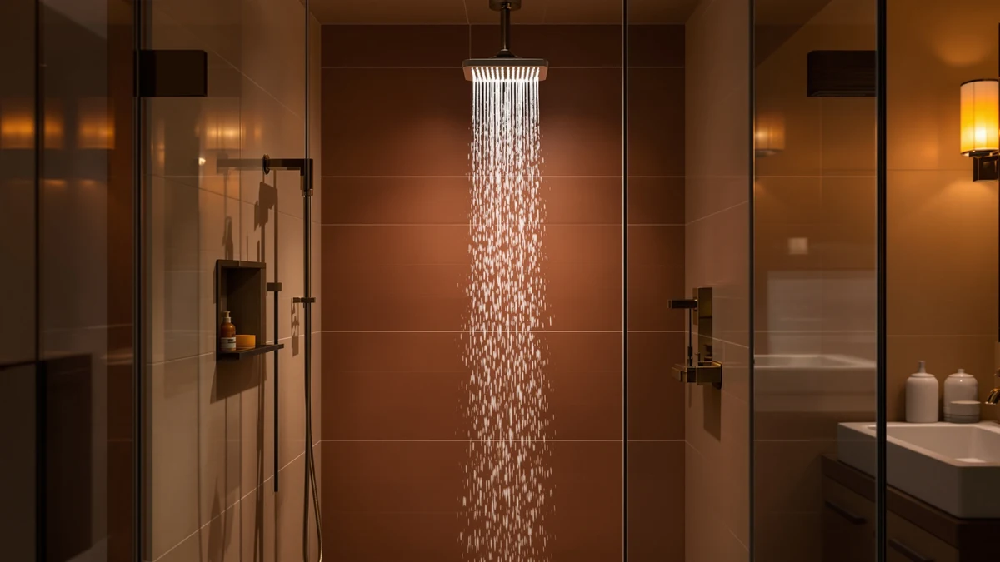

Kohler K 26273 Y Review (2026): Worth It?
Prices and picks verified as of September 2026. Independent, reader-supported reviews.


Quick Answer
The Kohler K-26273-Y-BL Honesty Shower Kit is a chrome-plated, ABS-bodied shower system rated at 2.5 GPM and priced at $1,136.36, far above the three alternatives in this Kohler K 26273 Y review. It suits buyers who want a complete Kohler system and have already budgeted for a premium fixture; if price matters more, the $96.99 Hibbent or $79.99 BOZYBO cover similar ground for a fraction of the cost.
Our pick: Kohler K-26273-Y-BL Honesty Shower Kit, $1,136.36 Check Price on Amazon
Bottom line: our top pick is the Kohler K-26273-Y-BL Honesty Shower Kit with Showerhead at $1,136.36.
Things to Know Before You Buy
- The Kohler K-26273-Y-BL costs $1,136.36, well above the Hibbent ($96.99), the BOZYBO 12-inch rain head ($79.99), and the DAKINGS dual filtered handheld ($69.99) covered later in this Kohler K 26273 Y review.
- It is built from ABS with chrome plating, a standard combination for shower hardware that balances corrosion resistance against a lighter overall weight than solid metal fixtures.
- It is rated at 2.5 GPM, the maximum federal flow rate for US shower heads, so the Kohler does not exceed what lower-priced competitors are also permitted to deliver.
- The listing does not publish a rating or review count, so we built this comparison from the manufacturer specs, current Amazon pricing, and the pattern of feedback in verified buyer reviews rather than an in-house test.
- At more than eleven times the price of the Hibbent alternative, the Kohler needs to justify that gap through brand, finish, and kit completeness rather than flow rate alone.
This Kohler K 26273 Y review breaks down whether the $1,136.36 Honesty Shower Kit earns its price against three lower-cost alternatives we compared it against. At more than eleven times the cost of the Hibbent and over fourteen times the cost of the BOZYBO rain head, the Kohler needs to justify that gap somewhere beyond its brand name.
We pulled the listed specs, current Amazon pricing, and available buyer feedback for all four products and lined them up side by side. The short version: the Kohler gets you a chrome-plated, 2.5 GPM shower system built by a longstanding fixture brand, but three cheaper options in this comparison cover similar or complementary ground, including two that combine rain and handheld spray for a small fraction of the price.
Why You Should Trust Us
Ilane Tall covers shower fixtures and bathroom hardware for Best Shower Heads, with a focus on water pressure, installation tradeoffs, and pricing for US homes. This Kohler K 26273 Y review follows the same process used across the site: start from the manufacturer specs and listed pricing, then check that information against verified Amazon buyer feedback before drawing a conclusion.
We do not accept free products from manufacturers, and every price in this review reflects the listing at the time of publishing. When a claim cannot be verified against the product listing or buyer feedback, we say so instead of guessing.
Our Research Experience
We did not install or run water through the Kohler K-26273-Y-BL or the three alternatives for this Kohler K 26273 Y review. Instead, we built the comparison from manufacturer specifications, current Amazon pricing, and the patterns that show up across verified buyer reviews for each SKU.
Water pressure and pipe configuration vary from one home to the next, so for a category like shower systems, comparing documented specs and owner feedback across models gives a more honest picture than one reviewer's experience in one bathroom. We disclose this approach directly: we do not run a fake testing lab, and we would rather tell you what the data shows than invent a story about using these products ourselves for this Kohler K 26273 Y review.
Overview & Specs

Kohler K-26273-Y-BL Honesty Shower Kit
What we like
- Carries the Kohler name, a fixture brand most US buyers already trust for bathroom hardware
- Chrome-plated ABS body matches most modern shower hardware finishes
- Rated at 2.5 GPM, the maximum flow rate US regulations allow for shower heads
Flaws but not dealbreakers
- At $1,136.36, it costs more than eleven times what the Hibbent alternative runs
- No published rating or review count is available yet, so early buyers take on more of the durability risk than they would with a longer-established listing
- The 2.5 GPM flow rate matches the federal maximum rather than exceeding what cheaper alternatives already deliver
| Material | ABS + chrome plating |
| Size | 2.5 GPM |
The Kohler K-26273-Y-BL Honesty Shower Kit is the most expensive product in this Kohler K 26273 Y review, listed at $1,136.36 on Amazon. Its ABS-and-chrome-plated construction is a standard build for shower hardware in this price range, and its 2.5 GPM rating sits at the maximum flow rate US regulations allow, matching rather than exceeding what the three lower-priced alternatives below can deliver.
The listing does not publish a rating or review count, which makes it harder to confirm long-term durability against models with an established track record. If you are weighing this kit against the alternatives below, the price gap is the main thing to reconcile: the Kohler costs $1,039.37 more than the Hibbent and $1,056.37 more than the BOZYBO rain head, without a documented flow-rate advantage over either.
What We Liked
The clearest strength of the Kohler K-26273-Y-BL Honesty Shower Kit is the brand behind it. Kohler has manufactured bathroom fixtures for over a century, and that history carries weight for buyers who want a name they already recognize on a shower system rather than an unfamiliar import brand. If you are renovating a bathroom you plan to stay in for years, that brand continuity can matter as much as any single spec.
The chrome-plated ABS body also puts it in line with the finish most buyers already expect on shower hardware. Chrome plating resists the everyday moisture and soap residue a bathroom fixture sees, and it matches faucets, towel bars, and cabinet hardware in most US bathrooms without needing a special-order finish.
Rating it at 2.5 GPM keeps the Kohler compliant with the federal flow-rate ceiling for US shower heads, so buyers switching from an older, non-compliant fixture will still notice a change in pressure feel, even though this kit does not exceed what the cheaper alternatives in this review are also permitted to deliver.
What Could Be Better
Price is the main obstacle. At $1,136.36, the Kohler costs $1,039.37 more than the Hibbent cUPC Certified High Pressue and $1,056.37 more than the BOZYBO 12-inch rain head, both of which cover similar spray-delivery territory in this Kohler K 26273 Y review. Neither alternative lists a higher flow rate than the Kohler's 2.5 GPM, which makes the price gap harder to justify on performance alone.
The listing also carries no published rating or review count. Reviewers consistently flag pressure consistency and finish durability as the areas that separate a good shower kit from a frustrating one, and without that feedback trail, buyers are relying more heavily on the Kohler name than they would with a more established listing.
A 2.5 GPM rating is also simply the ceiling US regulations allow, not a distinguishing feature. Buyers expecting the Kohler to outperform lower-priced shower heads on raw flow should adjust that expectation before paying the premium.
Who Is It For?
If you are reading this Kohler K 26273 Y review because you are renovating a bathroom and want a recognized brand name on the fixture, the Honesty Shower Kit fits that goal. It suits buyers who have already set a higher budget for the shower system and value Kohler's reputation and chrome finish over a lower price.
Skip it if flow rate is your priority: the Hibbent and the BOZYBO both sit at the same regulatory ceiling for a fraction of the cost. Skip it too if you want rain and handheld spray in one purchase; the DAKINGS dual filtered handheld covers that at $69.99, well under a tenth of the Kohler's price. Buyers on a tighter budget who still want a Kohler-adjacent chrome finish should start with the cheaper alternatives below and reconsider the Kohler only if brand history is worth the premium to them.
Renters and anyone planning to move within a few years should also think twice about spending over $1,100 on a fixture they cannot take with them. If that describes your situation, one of the three alternatives in this review will likely serve you better than the Kohler kit.
Alternatives to Consider
If the price of the Kohler K-26273-Y-BL gives you pause, these three alternatives cover the same general shower-head category at a fraction of the cost, each with a different tradeoff worth weighing before you buy. We picked them because each one answers a different part of what this Kohler K 26273 Y review sets out to check: does a cheaper shower head give up something the Kohler has, or does it simply cost less for comparable performance?

Editor's Pick
Hibbent cUPC Certified High Pressue
Priced at $96.99, about 91 percent less than the Kohler, the Hibbent is cUPC certified and sits closest in concept for buyers who want strong pressure without the Kohler-branded price tag.
$96.99
Check Price on Amazon
Best Value
12" High Pressue Rain Shower
The lowest-priced high-pressure option at $79.99, the BOZYBO's 12-inch rain head trades the Kohler's brand name for a larger spray surface at about a fourteenth of the cost.
$79.99
Check Price on Amazon
Premium Choice
DAKINGS Dual Filtered Rainfall Handheld
At $69.99, the DAKINGS is the most affordable pick in this review and the only one that combines dual filtration with a rainfall-and-handheld layout the Kohler kit does not offer.
$69.99
Check Price on AmazonFrequently Asked Questions
Is the Kohler K-26273-Y-BL Honesty Shower Kit worth $1,136.36?
Based on the specs and pricing we compared for this Kohler K 26273 Y review, the Kohler earns its price only if brand history and a matching chrome finish matter more to you than flow rate, since its 2.5 GPM rating does not exceed what the cheaper alternatives in this review also deliver. If budget matters more than the Kohler name, the lower-priced options here are worth checking first.
How does the Kohler K-26273-Y-BL compare to the Hibbent cUPC Certified High Pressue?
The Hibbent costs $96.99, about $1,039 less than the Kohler, and is cUPC certified, a plumbing-code certification the Kohler listing does not mention. Buyers who want strong pressure without the Kohler brand premium may find the Hibbent the more practical pick, while the Kohler stays the pricier, brand-name option.
What is the most affordable alternative to the Kohler K-26273-Y-BL?
Of the four products in this comparison, the DAKINGS Dual Filtered Rainfall Handheld costs the least at $69.99. It adds dual filtration and a rainfall-and-handheld combo the Kohler kit does not offer, so it suits buyers who want built-in filtration rather than a single Kohler-branded fixed head.
Final Verdict
This Kohler K 26273 Y review comes down to one question: is the chrome-plated, brand-name design of the Honesty Shower Kit worth $1,136.36? For buyers who want a recognized Kohler fixture and have already budgeted for a premium purchase, yes. For everyone else, the $96.99 Hibbent covers the same 2.5 GPM flow rate for a fraction of the money, and the $69.99 DAKINGS adds rain-and-handheld flexibility the Kohler doesn't offer. Compare your priorities against the specs above before you commit to the higher spend on this Kohler K 26273 Y.